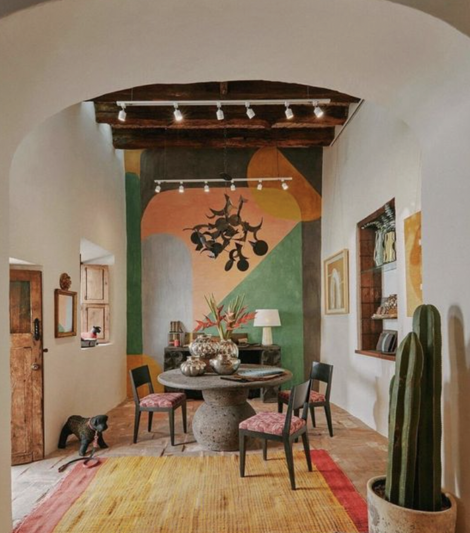
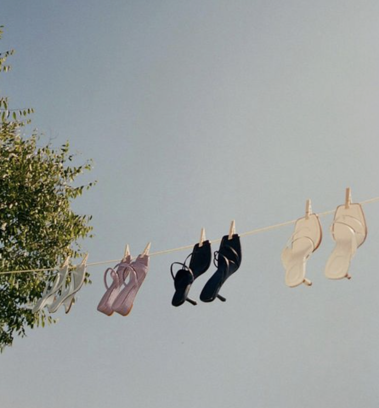
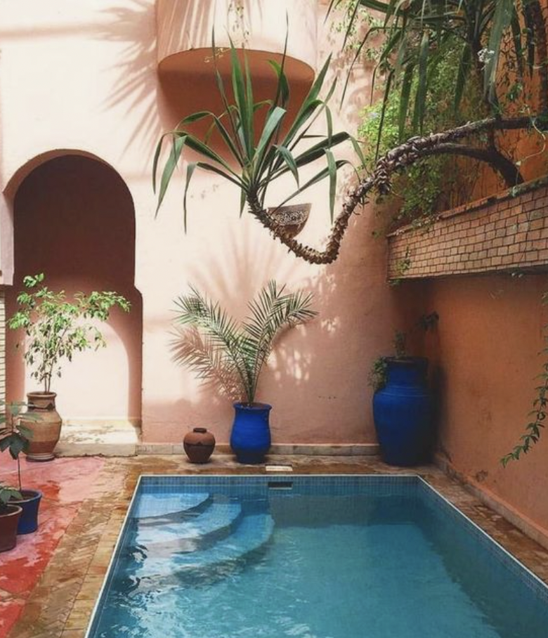

My name is Janai. I was raised in Texas, and I am a visual person. I'm very interested in design and art. I love visuals and have been practicing art since high school. My medium is photography. I find inspiration in nature, music and books. I also love travel and would like to share some imagery that inspires me below.
I picked three images that I feel represent my personality and the kind of visuals I enjoy. I love when artwork is rooted in nature and takes natural elements like certain colors or items found in nature and incorporates them into the piece. This just makes the piece so interesting but also gives you a feeling of comfort and home.
  